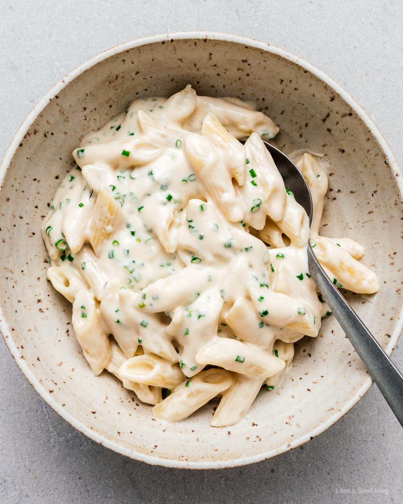

Sour Cream and Onion Pasta

Description
A pasta dish made from your favorite chip flavor!
This is essentially a pasta dish with a sour cream and onion sauce, mmmm.
Ingredients
- Pasta
- Butter
- Flour
- Milk
- Sour cream
- Fresh chives
- Salt and pepper
Cooking Directions
- Cook the pasta according to the package instructions in a large pot of salted water until al dente.
- Meanwhile, while the pasta is cooking, make the sauce: Melt the butter in a frying pan over low heat. When melted, sprinkle on the flour and stir in, cooking over medium low for 2-3 minutes.
- Slowly stream in the milk while whisking. Whisk until smooth, turning up the heat to medium so that the sauce starts to bubble and thicken.
- When thick, turn off the heat and whisk in the sour cream until smooth.
- When the pasta is done, scoop it out using a slotted spoon into the sauce. Toss to coat until everything is well sauced and glossy. If needed, thin out the sauce slightly with some of the pasta water. Add the chives and mix well. Taste and season with salt and pepper. Enjoy hot!